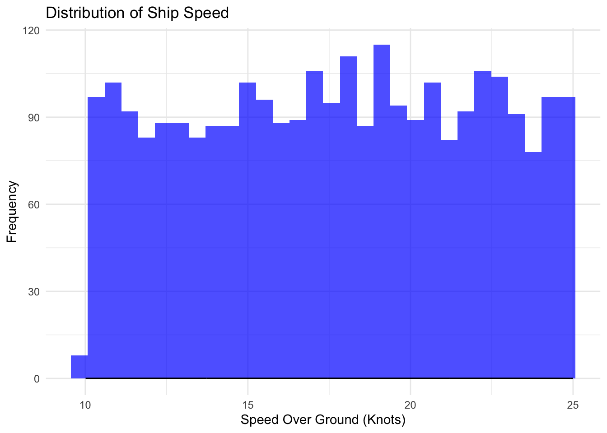
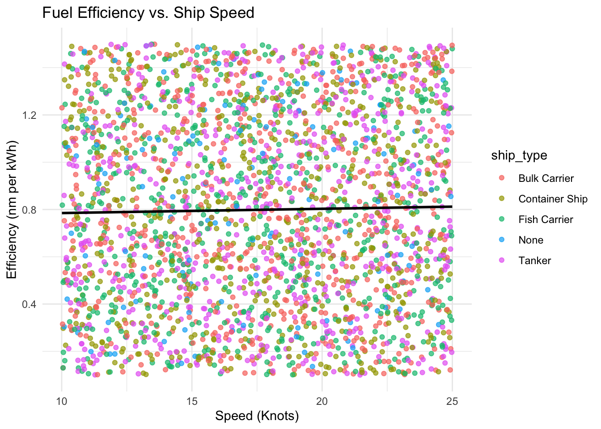
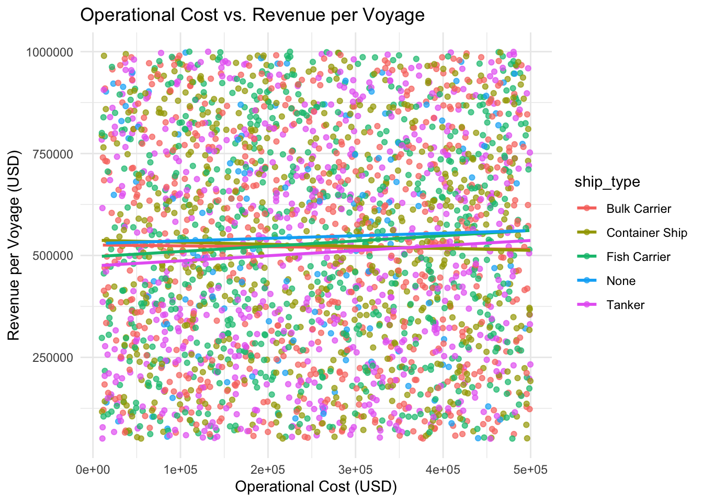
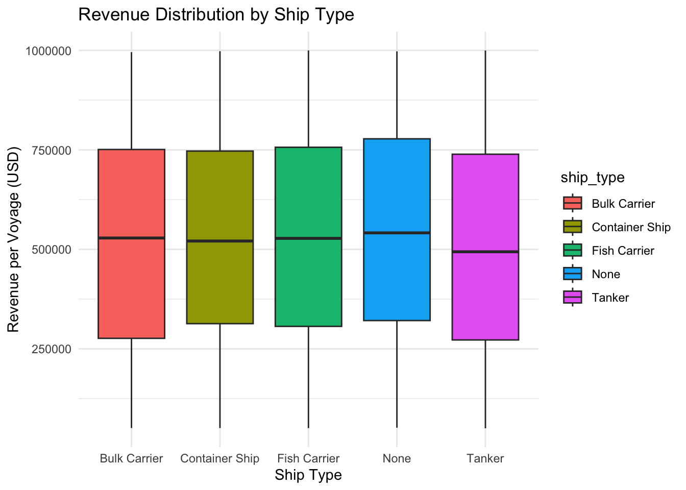
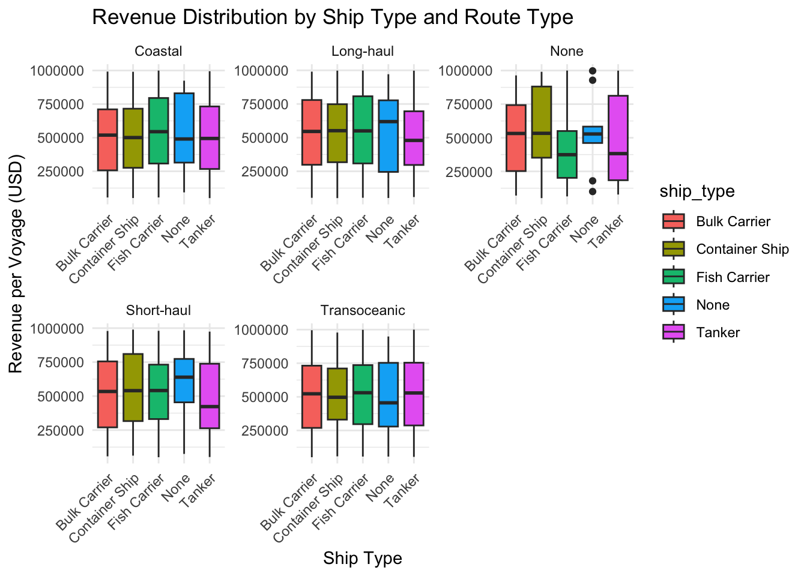
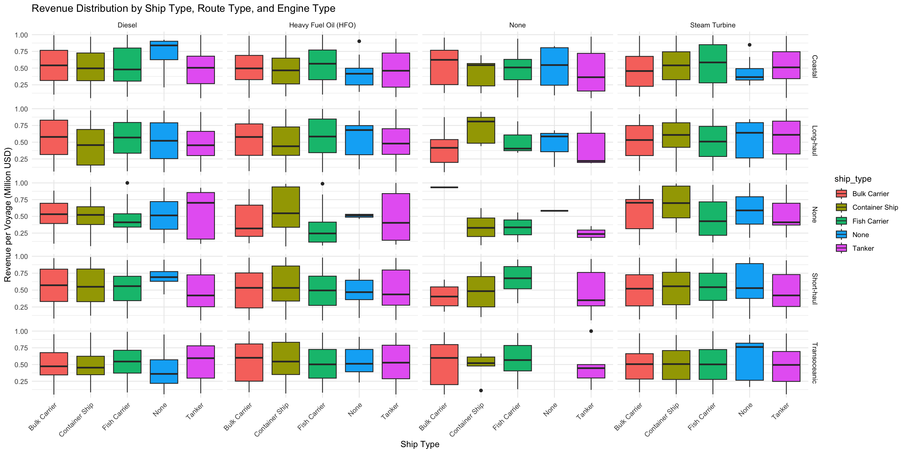
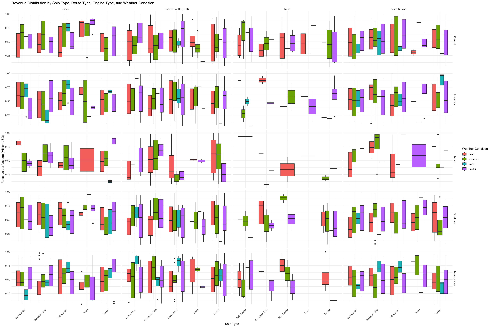
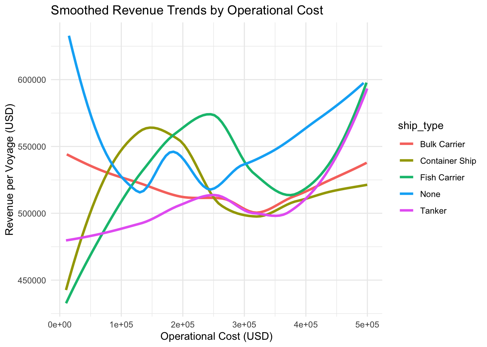

# Load necessary libraries
pacman::p_load(tidyverse,
ggplot2,
skimr, # For data summary
janitor, # For cleaning column names
knitr)Take Home Exercise 01 (Work in Progress…)
Overview and Background: Ship Performance in the Gulf of Guinea (Work in Progress…)
1 Introduction
The maritime industry is a cornerstone of global trade, ensuring the smooth transportation of goods across continents. The efficient performance of ships is crucial to optimizing fuel consumption, minimizing operational costs, and maximizing revenue. This assignment explores ship performance trends using the Ship Performance Clustering Dataset, focusing on ships operating in the Gulf of Guinea—a vital maritime region known for its economic and strategic importance.
By analyzing ship performance metrics such as speed, efficiency, operational cost, and revenue, we aim to uncover insights that can enhance operational decision-making. This study employs data visualization techniques to identify key patterns, trends, and potential optimizations in ship performance.

2 Background and Content
2.1 Maritime Significance of the Gulf of Guinea
The Gulf of Guinea serves as a major maritime trade route, connecting West Africa to global markets. The region hosts various types of commercial ships, including tankers, container ships, and bulk carriers, each operating under different economic and environmental conditions. Given the challenges posed by fuel costs, maintenance, and weather conditions, shipowners and operators constantly seek ways to improve efficiency while reducing operational expenses.
2.2 Data Overview
The dataset used in this study is a synthetic but realistic representation of maritime operations. The key attributes include:
- Speed Over Ground (knots)
- Distance Traveled (nautical miles)
- Engine Power (kW)
- Operational Cost (USD)
- Revenue per Voyage (USD)
- Efficiency (nautical miles per kilowatt-hour)
- Ship Type, Route Type, Engine Type, and Maintenance Status
This dataset provides a rich foundation for exploratory data analysis (EDA), clustering analysis, and performance optimization.
2.2.1 Understanding the Dataset
This dataset consists of 2736 rows and 24 columns, categorized into numerical and categorical features. Key attributes include: Numerical Features:
- Speed_Over_Ground_knots – Ship speed over water (knots)
- Engine_Power_kW – Engine power output (kilowatts)
- Distance_Traveled_nm – Distance traveled per voyage (nautical miles)
- Operational_Cost_USD – Cost per voyage (USD)
- Revenue_per_Voyage_USD – Revenue per voyage (USD)
- Efficiency_nm_per_kWh – Energy efficiency (nautical miles per kilowatt-hour)
Categorical Features:
- Ship_Type (e.g., Tanker, Container Ship, Bulk Carrier)
- Route_Type (e.g., Short-haul, Long-haul, Transoceanic)
- Engine_Type (e.g., Diesel, Heavy Fuel Oil)
- Maintenance_Status (e.g., Fair, Critical, Good)
- Weather_Condition (e.g., Calm, Moderate, Rough)
3 Load & Explore the Dataset
- Loading the required libraries
- Loading the dataset into R.
- Checking the structure (columns, data types).
- Identifying missing values and duplicates.
3.1 Loading Libraries
3.2 Essential R Packages for Data Science and Visualization
This document provides an overview of essential R packages commonly used for data science, data visualization, and dynamic reporting.
3.2.1 Core Data Science Libraries
- tidyverse: A collection of integrated packages designed for modern data science workflows, including data import, tidying, transformation, visualization, and modeling.
- haven: Enables R to read and write data stored in SAS, SPSS, and Stata formats, ensuring seamless interoperability with statistical software.
- knitr: Facilitates dynamic report generation, allowing users to embed R code in markdown and generate high-quality documents.
3.2.2 Visualization Enhancements for ggplot2
- patchwork: Simplifies the arrangement of multiple ggplot2-based visualizations into composite figures for improved storytelling.
- ggthemes: Provides additional themes, scales, and geoms to enhance the appearance of ggplot2 visualizations.
- scales: Supports improved data labeling, annotation, and scale transformations for ggplot2.
- ggridges: Enables the creation of ridgeline plots, useful for visualizing distribution changes over time or across categories.
- ggpubr: Provides functions for creating publication-ready plots with minimal effort.
- gganimate: Extends ggplot2 to include animation, making it possible to visualize dynamic data over time.
- ggdist: Offers enhanced tools for visualizing statistical distributions and uncertainties in data.
- ggtext: Enhances text rendering and formatting in ggplot2 visualizations.
- ggalt: A collection of additional geoms, coordinates, and statistics that extend ggplot2 capabilities.
- ggextra: Adds marginal plots and supplementary visual elements to ggplot2 graphics.
- cowplot: Provides tools for creating publication-quality figures, including alignment functions and themes for consistent presentation.
- ggnewscale: Allows the definition of multiple independent scales within a single ggplot2 visualization, useful for complex multivariate plots.
Loading the libraries using pacman package.
3.3 Load & Inspect Data
ship_data <- read.csv("data/Ship_Performance_Dataset.csv")# Load dataset
ship_data <- read.csv("data/Ship_Performance_Dataset.csv")
# Clean column names
ship_data <- clean_names(ship_data)
# Check structure
glimpse(ship_data)Rows: 2,736
Columns: 18
$ date <chr> "2023-06-04", "2023-06-11", "2023-06-18", "202…
$ ship_type <chr> "Container Ship", "Fish Carrier", "Container S…
$ route_type <chr> "None", "Short-haul", "Long-haul", "Transocean…
$ engine_type <chr> "Heavy Fuel Oil (HFO)", "Steam Turbine", "Dies…
$ maintenance_status <chr> "Critical", "Good", "Fair", "Fair", "Fair", "F…
$ speed_over_ground_knots <dbl> 12.59756, 10.38758, 20.74975, 21.05510, 13.742…
$ engine_power_k_w <dbl> 2062.9840, 1796.0574, 1648.5567, 915.2618, 108…
$ distance_traveled_nm <dbl> 1030.9436, 1060.4864, 658.8741, 1126.8225, 144…
$ draft_meters <dbl> 14.132284, 14.653083, 7.199261, 11.789063, 9.7…
$ weather_condition <chr> "Moderate", "Rough", "Moderate", "Moderate", "…
$ cargo_weight_tons <dbl> 1959.0179, 162.3947, 178.0409, 1737.3853, 260.…
$ operational_cost_usd <dbl> 483832.35, 483388.00, 448543.40, 261349.61, 28…
$ revenue_per_voyage_usd <dbl> 292183.27, 883765.79, 394018.75, 87551.38, 676…
$ turnaround_time_hours <dbl> 25.86708, 63.24820, 49.41815, 22.40911, 64.158…
$ efficiency_nm_per_k_wh <dbl> 1.4551789, 0.2903614, 0.4995945, 0.7029057, 1.…
$ seasonal_impact_score <dbl> 1.4156533, 0.8856478, 1.4058132, 1.3707043, 0.…
$ weekly_voyage_count <int> 1, 6, 9, 1, 8, 7, 3, 6, 8, 2, 9, 4, 3, 7, 7, 3…
$ average_load_percentage <dbl> 93.76925, 93.89537, 96.21824, 66.19370, 80.008…# Summary statistics
skim(ship_data)| Name | ship_data |
| Number of rows | 2736 |
| Number of columns | 18 |
| _______________________ | |
| Column type frequency: | |
| character | 6 |
| numeric | 12 |
| ________________________ | |
| Group variables | None |
Variable type: character
| skim_variable | n_missing | complete_rate | min | max | empty | n_unique | whitespace |
|---|---|---|---|---|---|---|---|
| date | 0 | 1 | 10 | 10 | 0 | 57 | 0 |
| ship_type | 0 | 1 | 4 | 14 | 0 | 5 | 0 |
| route_type | 0 | 1 | 4 | 12 | 0 | 5 | 0 |
| engine_type | 0 | 1 | 4 | 20 | 0 | 4 | 0 |
| maintenance_status | 0 | 1 | 4 | 8 | 0 | 4 | 0 |
| weather_condition | 0 | 1 | 4 | 8 | 0 | 4 | 0 |
Variable type: numeric
| skim_variable | n_missing | complete_rate | mean | sd | p0 | p25 | p50 | p75 | p100 | hist |
|---|---|---|---|---|---|---|---|---|---|---|
| speed_over_ground_knots | 0 | 1 | 17.60 | 4.31 | 10.01 | 13.93 | 17.71 | 21.28 | 25.00 | ▇▇▇▇▇ |
| engine_power_k_w | 0 | 1 | 1757.61 | 717.00 | 501.03 | 1148.10 | 1757.49 | 2382.59 | 2998.73 | ▇▇▇▇▇ |
| distance_traveled_nm | 0 | 1 | 1036.41 | 568.63 | 50.43 | 548.51 | 1037.82 | 1540.93 | 1998.34 | ▇▇▇▇▇ |
| draft_meters | 0 | 1 | 9.93 | 2.88 | 5.00 | 7.44 | 9.92 | 12.41 | 14.99 | ▇▇▇▇▇ |
| cargo_weight_tons | 0 | 1 | 1032.57 | 558.70 | 50.23 | 553.98 | 1043.21 | 1527.72 | 1999.13 | ▇▇▇▇▇ |
| operational_cost_usd | 0 | 1 | 255143.34 | 140890.48 | 10092.31 | 131293.38 | 257157.65 | 381796.93 | 499734.87 | ▇▇▇▇▇ |
| revenue_per_voyage_usd | 0 | 1 | 521362.06 | 271211.63 | 50351.81 | 290346.39 | 520176.93 | 750072.79 | 999916.70 | ▇▇▇▇▇ |
| turnaround_time_hours | 0 | 1 | 41.75 | 17.63 | 12.02 | 26.17 | 41.59 | 57.36 | 71.97 | ▇▇▇▇▇ |
| efficiency_nm_per_k_wh | 0 | 1 | 0.80 | 0.40 | 0.10 | 0.46 | 0.79 | 1.15 | 1.50 | ▇▇▇▇▇ |
| seasonal_impact_score | 0 | 1 | 1.00 | 0.29 | 0.50 | 0.76 | 1.01 | 1.25 | 1.50 | ▇▇▇▇▇ |
| weekly_voyage_count | 0 | 1 | 4.91 | 2.60 | 1.00 | 3.00 | 5.00 | 7.00 | 9.00 | ▇▇▃▇▇ |
| average_load_percentage | 0 | 1 | 75.22 | 14.51 | 50.01 | 62.70 | 75.50 | 87.72 | 100.00 | ▇▇▇▇▇ |
# Check for missing values
colSums(is.na(ship_data)) date ship_type route_type
0 0 0
engine_type maintenance_status speed_over_ground_knots
0 0 0
engine_power_k_w distance_traveled_nm draft_meters
0 0 0
weather_condition cargo_weight_tons operational_cost_usd
0 0 0
revenue_per_voyage_usd turnaround_time_hours efficiency_nm_per_k_wh
0 0 0
seasonal_impact_score weekly_voyage_count average_load_percentage
0 0 0 # Check for duplicates
sum(duplicated(ship_data))[1] 03.3.1 Examine Unique Values in Categorical Variables
- Automatically selects categorical variables (columns that are either character or factor types).
- Prints out the column name in a formatted header.
- Lists all unique values within each categorical column.
# Function to print unique values of categorical variables
print_categorical_values <- function(data) {
cat("### Categorical Variables and Their Unique Values\n\n")
# Identify columns with date-like values (YYYY-MM-DD format) and date class
date_columns <- names(data)[sapply(data, function(col) {
is_date <- inherits(col, "Date") || inherits(col, "POSIXt") # Check if it's a date class
is_formatted_date <- all(grepl("^\\d{4}-\\d{2}-\\d{2}$", na.omit(as.character(col)))) # Check string format
return(is_date | is_formatted_date)
})]
# Select categorical columns, excluding detected date columns
categorical_vars <- data %>%
select(where(~ is.character(.) | is.factor(.))) %>%
select(-any_of(date_columns)) # Remove detected date columns
if (ncol(categorical_vars) == 0) {
cat("No categorical variables found in the dataset.\n")
return()
}
for (col in colnames(categorical_vars)) {
unique_values <- unique(categorical_vars[[col]])
# Remove "None" if it appears as a category
unique_values <- unique_values[unique_values != "None"]
cat("####", col, "\n")
cat("Unique values:", paste(unique_values, collapse = ", "), "\n\n")
}
}
# Run the function
print_categorical_values(ship_data)### Categorical Variables and Their Unique Values
#### ship_type
Unique values: Container Ship, Fish Carrier, Bulk Carrier, Tanker
#### route_type
Unique values: Short-haul, Long-haul, Transoceanic, Coastal
#### engine_type
Unique values: Heavy Fuel Oil (HFO), Steam Turbine, Diesel
#### maintenance_status
Unique values: Critical, Good, Fair
#### weather_condition
Unique values: Moderate, Rough, Calm 3.3.2 Count Rows with None
The code chunk counts the number of rows in your dataset based on how many “None” values they contain. It categorizes rows into:
- 1x “None”
- 2x “None”
- 3x “None”
- More than 3x “None”
# Function to count and display rows based on the number of "None" occurrences
count_none_rows <- function(data) {
# Count the number of "None" values in each row
none_counts <- rowSums(data == "None", na.rm = TRUE)
# Count how many rows fall into each category
none_summary <- data.frame(
"Category" = c("1x None", "2x None", "3x None", ">3x None"),
"Count" = c(
sum(none_counts == 1),
sum(none_counts == 2),
sum(none_counts == 3),
sum(none_counts > 3)
)
)
# Display summary
print(none_summary)
# Display sample rows for each category
for (i in 1:4) {
cat("\n### Sample Rows for", none_summary$Category[i], "\n")
sample_rows <- data[none_counts == i, ]
if (nrow(sample_rows) > 0) {
print(head(sample_rows, 5)) # Show only first 5 rows for clarity
} else {
cat("No rows found in this category.\n")
}
}
}
# Run the function
count_none_rows(ship_data) Category Count
1 1x None 540
2 2x None 68
3 3x None 0
4 >3x None 1
### Sample Rows for 1x None
date ship_type route_type engine_type maintenance_status
1 2023-06-04 Container Ship None Heavy Fuel Oil (HFO) Critical
9 2023-07-30 None Coastal Heavy Fuel Oil (HFO) Good
16 2023-09-17 Tanker Long-haul None Good
21 2023-10-22 Container Ship None Diesel Critical
22 2023-10-29 Bulk Carrier Short-haul Diesel None
speed_over_ground_knots engine_power_k_w distance_traveled_nm draft_meters
1 12.59756 2062.9840 1030.9436 14.132284
9 17.30936 1179.0188 429.5643 6.002358
16 15.08722 578.8929 1932.2131 12.998270
21 23.80385 1120.6992 1169.4785 10.544799
22 22.76036 2335.2629 1461.9175 7.980762
weather_condition cargo_weight_tons operational_cost_usd
1 Moderate 1959.0179 483832.4
9 Moderate 1953.4479 346071.5
16 Rough 403.8543 424860.6
21 Rough 1084.2556 377335.2
22 Calm 1100.9686 441952.1
revenue_per_voyage_usd turnaround_time_hours efficiency_nm_per_k_wh
1 292183.3 25.86708 1.4551789
9 448682.9 14.45182 0.9774483
16 633712.5 68.22836 0.6526741
21 371301.2 57.59360 1.2623670
22 666766.9 35.56856 1.0500736
seasonal_impact_score weekly_voyage_count average_load_percentage
1 1.4156533 1 93.76925
9 0.7649141 8 50.24706
16 1.3086865 3 74.51022
21 1.4179010 8 83.44323
22 0.8750325 6 92.18716
### Sample Rows for 2x None
date ship_type route_type engine_type maintenance_status
43 2024-03-24 Tanker None Steam Turbine Critical
129 2023-09-10 Bulk Carrier Coastal Steam Turbine None
135 2023-10-22 None Long-haul Diesel None
199 2023-12-10 None Coastal None Fair
219 2024-04-28 Bulk Carrier Coastal None None
speed_over_ground_knots engine_power_k_w distance_traveled_nm draft_meters
43 19.08942 1095.2398 1801.1749 14.08673
129 22.70870 1512.1199 771.3406 9.85436
135 14.64564 2605.7648 1714.8680 11.43451
199 12.25630 568.2896 495.4977 11.85982
219 10.36508 1195.3456 247.0565 12.56096
weather_condition cargo_weight_tons operational_cost_usd
43 None 858.1013 70720.33
129 None 1580.1024 226899.21
135 Moderate 682.6991 439967.19
199 Calm 983.0555 28916.94
219 Rough 1098.1778 22233.31
revenue_per_voyage_usd turnaround_time_hours efficiency_nm_per_k_wh
43 382123.59 66.85377 0.7762076
129 286758.26 39.56307 0.8514023
135 51708.41 55.27975 0.5330556
199 93070.13 16.16368 1.1969162
219 956502.65 61.08365 0.7352781
seasonal_impact_score weekly_voyage_count average_load_percentage
43 0.7934013 3 85.87867
129 0.8086902 9 90.61944
135 1.3134256 3 58.93742
199 0.7416365 1 77.79094
219 1.4287733 7 64.02880
### Sample Rows for 3x None
No rows found in this category.
### Sample Rows for >3x None
date ship_type route_type engine_type maintenance_status
197 2023-11-26 None None None None
speed_over_ground_knots engine_power_k_w distance_traveled_nm draft_meters
197 11.12406 1493.909 1279.969 11.59002
weather_condition cargo_weight_tons operational_cost_usd
197 Rough 1515.524 317587.4
revenue_per_voyage_usd turnaround_time_hours efficiency_nm_per_k_wh
197 583011.8 29.87684 0.1989973
seasonal_impact_score weekly_voyage_count average_load_percentage
197 0.9338018 9 82.865633.3.3 Count Categorical Columns with None
- Function to count “None” values in specified categorical columns
- ship_type
- route_type
- engine_type
- maintenance_status
- weather_condition
count_none_per_column <- function(data, columns) {
# Filter dataset to only selected columns
data_selected <- data %>% select(all_of(columns))
# Count occurrences of "None" in each column
none_counts <- colSums(data_selected == "None", na.rm = TRUE)
# Convert to data frame for display
df_summary <- data.frame(Column = names(none_counts), Count_None = none_counts)
# Display results
print(df_summary)
}
# Define the categorical columns to analyze
categorical_columns <- c("ship_type", "route_type", "engine_type", "maintenance_status", "weather_condition")
# Run the function
count_none_per_column(ship_data, categorical_columns) Column Count_None
ship_type ship_type 136
route_type route_type 136
engine_type engine_type 136
maintenance_status maintenance_status 136
weather_condition weather_condition 1363.4 Data Cleaning & Wrangling
- Data Cleaning: Identifying and handling missing, duplicate, or inconsistent data.
- Data Transformation: Converting data types (categorical columns into factors), normalizing values, and reformatting structures to improve usability.
- Data Reduction: Filtering, aggregating, or summarizing data to focus on relevant information.
- Data Validation: Ensuring data quality, accuracy, and consistency.
- Data Integration: Combining data from multiple sources for a comprehensive dataset; where necessary and if required.
- Feature Engineering: Create additional fields if needed.
# Convert categorical variables to factors
categorical_vars <- c("ship_type", "route_type", "engine_type", "maintenance_status", "weather_condition")
ship_data[categorical_vars] <- lapply(ship_data[categorical_vars], as.factor)
# Identify Missing Values
missing_summary <- ship_data %>%
summarise(across(everything(), ~sum(is.na(.)), .names = "missing_{.col}"))
# Display Missing Value Summary
print("Missing Values Summary:")[1] "Missing Values Summary:"print(missing_summary) missing_date missing_ship_type missing_route_type missing_engine_type
1 0 0 0 0
missing_maintenance_status missing_speed_over_ground_knots
1 0 0
missing_engine_power_k_w missing_distance_traveled_nm missing_draft_meters
1 0 0 0
missing_weather_condition missing_cargo_weight_tons
1 0 0
missing_operational_cost_usd missing_revenue_per_voyage_usd
1 0 0
missing_turnaround_time_hours missing_efficiency_nm_per_k_wh
1 0 0
missing_seasonal_impact_score missing_weekly_voyage_count
1 0 0
missing_average_load_percentage
1 0# Handling missing values
ship_data <- ship_data %>%
mutate(across(where(is.numeric), ~replace_na(., median(., na.rm = TRUE)))) %>%
mutate(across(where(is.factor), ~replace_na(., as.factor("Missing")))) # Fix for categorical missing values
# Verify changes
glimpse(ship_data)Rows: 2,736
Columns: 18
$ date <chr> "2023-06-04", "2023-06-11", "2023-06-18", "202…
$ ship_type <fct> Container Ship, Fish Carrier, Container Ship, …
$ route_type <fct> None, Short-haul, Long-haul, Transoceanic, Tra…
$ engine_type <fct> Heavy Fuel Oil (HFO), Steam Turbine, Diesel, S…
$ maintenance_status <fct> Critical, Good, Fair, Fair, Fair, Fair, Critic…
$ speed_over_ground_knots <dbl> 12.59756, 10.38758, 20.74975, 21.05510, 13.742…
$ engine_power_k_w <dbl> 2062.9840, 1796.0574, 1648.5567, 915.2618, 108…
$ distance_traveled_nm <dbl> 1030.9436, 1060.4864, 658.8741, 1126.8225, 144…
$ draft_meters <dbl> 14.132284, 14.653083, 7.199261, 11.789063, 9.7…
$ weather_condition <fct> Moderate, Rough, Moderate, Moderate, Moderate,…
$ cargo_weight_tons <dbl> 1959.0179, 162.3947, 178.0409, 1737.3853, 260.…
$ operational_cost_usd <dbl> 483832.35, 483388.00, 448543.40, 261349.61, 28…
$ revenue_per_voyage_usd <dbl> 292183.27, 883765.79, 394018.75, 87551.38, 676…
$ turnaround_time_hours <dbl> 25.86708, 63.24820, 49.41815, 22.40911, 64.158…
$ efficiency_nm_per_k_wh <dbl> 1.4551789, 0.2903614, 0.4995945, 0.7029057, 1.…
$ seasonal_impact_score <dbl> 1.4156533, 0.8856478, 1.4058132, 1.3707043, 0.…
$ weekly_voyage_count <int> 1, 6, 9, 1, 8, 7, 3, 6, 8, 2, 9, 4, 3, 7, 7, 3…
$ average_load_percentage <dbl> 93.76925, 93.89537, 96.21824, 66.19370, 80.008…3.5 Exploratory Data Analysis (EDA)
Visualizing Key Metrics
3.5.1 Ship Speed Distribution
ggplot(ship_data, aes(x = speed_over_ground_knots)) +
geom_histogram(fill = "blue", bins = 30, alpha = 0.7) +
geom_density(alpha = 0.5, fill = "lightblue") +
theme_minimal() +
labs(title = "Distribution of Ship Speed",
x = "Speed Over Ground (Knots)",
y = "Frequency")
3.5.2 Correlation: Fuel Efficiency vs. Speed
colnames(ship_data) [1] "date" "ship_type"
[3] "route_type" "engine_type"
[5] "maintenance_status" "speed_over_ground_knots"
[7] "engine_power_k_w" "distance_traveled_nm"
[9] "draft_meters" "weather_condition"
[11] "cargo_weight_tons" "operational_cost_usd"
[13] "revenue_per_voyage_usd" "turnaround_time_hours"
[15] "efficiency_nm_per_k_wh" "seasonal_impact_score"
[17] "weekly_voyage_count" "average_load_percentage"ggplot(ship_data, aes(x = speed_over_ground_knots, y = efficiency_nm_per_k_wh, color = ship_type)) +
geom_point(alpha = 0.7) +
geom_smooth(method = "lm", se = FALSE, color = "black") +
theme_minimal() +
labs(title = "Fuel Efficiency vs. Ship Speed",
x = "Speed (Knots)",
y = "Efficiency (nm per kWh)")
3.5.3 Operational Cost vs. Revenue per Voyage by Ship Type
ggplot(ship_data, aes(x = operational_cost_usd, y = revenue_per_voyage_usd, color = ship_type)) +
geom_point(alpha = 0.7) +
geom_smooth(method = "lm", se = FALSE) +
theme_minimal() +
labs(title = "Operational Cost vs. Revenue per Voyage",
x = "Operational Cost (USD)",
y = "Revenue per Voyage (USD)")
3.5.4 Use geom_boxplot() for Distribution Insight
ggplot(ship_data, aes(x = ship_type, y = revenue_per_voyage_usd, fill = ship_type)) +
geom_boxplot() +
theme_minimal() +
labs(title = "Revenue Distribution by Ship Type",
x = "Ship Type",
y = "Revenue per Voyage (USD)")
ggplot(ship_data, aes(x = ship_type, y = revenue_per_voyage_usd, fill = ship_type)) +
geom_boxplot() +
facet_wrap(~ route_type, scales = "free") + # Split by route type
theme_minimal() +
labs(title = "Revenue Distribution by Ship Type and Route Type",
x = "Ship Type",
y = "Revenue per Voyage (USD)") +
theme(axis.text.x = element_text(angle = 45, hjust = 1)) # Rotate x-axis labels for readability
ggplot(ship_data, aes(x = ship_type, y = revenue_per_voyage_usd / 1e6, fill = ship_type)) +
geom_boxplot() +
facet_grid(route_type ~ engine_type, scales = "free") + # Split by Route & Engine Type
theme_minimal() +
labs(title = "Revenue Distribution by Ship Type, Route Type, and Engine Type",
x = "Ship Type",
y = "Revenue per Voyage (Million USD)") + # Updated y-axis label
theme(axis.text.x = element_text(angle = 45, hjust = 1)) # Rotate x-axis labels for readability
ggplot(ship_data, aes(x = ship_type, y = revenue_per_voyage_usd / 1e6, fill = weather_condition)) +
geom_boxplot() +
facet_grid(route_type ~ engine_type, scales = "free") + # Facet by Route Type (rows) & Engine Type (columns)
theme_minimal() +
labs(title = "Revenue Distribution by Ship Type, Route Type, Engine Type, and Weather Condition",
x = "Ship Type",
y = "Revenue per Voyage (Million USD)",
fill = "Weather Condition") + # Updated legend title
theme(axis.text.x = element_text(angle = 45, hjust = 1)) # Rotate x-axis labels for readability
3.5.5 Use geom_smooth() with Aggregation (LOESS or GAM Smoothing)
ggplot(ship_data, aes(x = operational_cost_usd, y = revenue_per_voyage_usd, color = ship_type)) +
geom_smooth(method = "loess", se = FALSE, size = 1.2) + # LOESS smooth to capture trends
theme_minimal() +
labs(title = "Smoothed Revenue Trends by Operational Cost",
x = "Operational Cost (USD)",
y = "Revenue per Voyage (USD)")